<<PlainTextDocument>>
Metadata: 7
Content: chars: 5711
MONETARY POLICY COMMITTEE
STATE BANK OF PAKISTAN
Monetary Policy Statement
January 2018
Pakistan’s economic growth is on track to achieve its highest level in the last eleven years. Average
headline inflation remains within the forecast range of SBP, but core inflation has continued to
increase. Fiscal deficit for H1-FY18 is expected to fall close to the last year’s 2.5 percent. There has
been visible improvement in export growth and remittances are marginally higher. However, largely
due to high level of imports the current account deficit remains under pressure. The exchange rate
adjustment in December 2017 is expected to help ease the pressure on the external front.
The progress in the real sector indicates that agriculture sector is set to perform better for the
second year in a row. Production of all major Kharif crops, except maize, has surpassed the level of
FY17. Similarly, large scale manufacturing (LSM) recorded a healthy broad-based growth of 7.2
percent during Jul-Nov FY18 as compared to 3.2 percent during the same period last year. While
there could be some deceleration in LSM growth due to sector specific issues such as sugar, POL
and fertilizer, overall industrial activity is likely to remain strong. Benefiting from both infrastructure
and CPEC related investments, construction and its allied industries are expected to maintain their
higher growth momentum. After incorporating the impact of commodity sector dynamics on the
services sector, the real GDP growth is projected to be around 5.8 percent, significantly higher than
FY17, but marginally lower than the annual target of 6 percent for FY18. This is largely due to
expectations of a below-target wheat crop because of a reduction in area under cultivation.
Average headline inflation for H1-FY18 stands at 3.8 percent. Meanwhile, core inflation (non-food-
non-energy) continued to maintain its higher trajectory, and clocked in at 5.5 percent during the first
half of the year as compared to 4.9 percent last year. This together with a lagged impact of PKR
depreciation and rising international oil prices are likely to increase inflation in the coming months.
Taking into account the impact of all these developments, while the average inflation for FY18 is
still projected to fall in the range of 4.5 to 5.5 percent, end of fiscal year YoY inflation is likely to
inch towards the annual target of 6 percent.
Broad money supply grew marginally by 1.9 percent during 1st Jul-12th Jan FY18.. This is a reflection
of the decline in NFA and government efforts to contain expenditures. Higher tax collection and
proceeds from the issuance of Sukuk and Eurobond have led to reduction in net budgetary
borrowing which stood at Rs. 401.9 billion during 1st Jul-12th Jan FY18 as compared to Rs. 470.4
billion in the corresponding period of the previous year. Moreover, the delay in the sugar crushing
season also contributed to a moderation of demand in private sector credit.
On the external front, export receipts posted the highest growth in the last seven years of 10.8
percent in H1-FY18 against a reduction of 1.4 percent in H1-FY17. Worker’s remittances also
recorded growth (2.5 percent) during the first half of the year as compared to a decline in the same
period last year. However, favorable impact of these positives was overshadowed by the
continuation of strong growth in imports of goods and services. The current account deficit
widened to US$ 7.4 billion during the first half of the year, which was 1.6 times of the deficit during
the same period last year. Developments in financial accounts show that one-fifth of this deficit was
financed by healthy foreign direct investments inflows, and the rest was managed by the official
flows and the country’s own resources. As a result, SBP’s liquid foreign exchange reserves
Page 1
MONETARY POLICY COMMITTEE
STATE BANK OF PAKISTAN
witnessed a decline of US$ 2.6 billion since end June 2017 to reach US$ 13.5 billion as of 19th
January 2018. Going forward, the PKR depreciation in December 2017, the export package, the
lagged impact of adjustments in regulatory duties, favorable external environment, and expected
increase in workers’ remittances, will contribute to a gradual reduction in the country’s current
account deficit. While increase in international oil prices pose a major risk to this assessment,
managing overall balance of payments in near term depends on the realization of official financial
flows.
Four key factors of Pakistan’s economy have witnessed important changes since November 2017
impinging upon the policy rate decision. Firstly, PKR has depreciated by around 5 percent.
Secondly, oil prices are hovering near USD 70 per barrel. Thirdly, a number of central banks have
started to adjust their policy rates upwards adversely affecting PKR interest-rate differentials vis-à-
vis their currencies. Fourthly, multiple indicators show that the output gap has significantly
narrowed indicating a buildup of demand pressures.
Based on these developments, MPC is of the view that in order to preempt overheating of the
economy and inflation breaching its target rate, this is the right time to make a policy decision that
would balance growth and stability in the medium to long term. Accordingly, the Monetary Policy
Committee has decided to raise the policy rate by 25 bps to 6.00 percent.
Page 2Unlocking the Power of Data: Enhancing Public Policy through Advanced Data Infrastructure and Language Model Analysis
Abstract
Data is the fundamental building block for advancements in artificial intelligence (AI), general AI (GAI), machine learning (ML), and large language models (LLMs). This study emphasizes the critical need for robust data infrastructure, arguing that without it, countries cannot fully benefit from technological advancements across various economic sectors. Governments possess vast repositories of both structured and unstructured data across domains such as the judiciary, parliaments, and civil bureaucracy. However, these potential goldmines remain largely untapped due to inadequate data management capabilities and a lack of appreciation for the necessity of high-quality data.
This study aims to demonstrate how large amounts of unstructured policy document data can be leveraged to analyze policy objectives, enhance public policy formulation and implementation, and realize the potential of data as a strategic asset in governance. Data quality, trust, privacy and other data aspects are also highlighted to benefit from 4th industrial revolution which is based on information. To explore the effective utilization of public policy data and to harness natural language processing (NLP) and LLMs to analyze critical policy documents, monetary policy statements issued by the State Bank of Pakistan are analysed using NLP models.
Introduction
Historically, the sources of national competitive advantage have evolved across different eras, reflecting shifts in global power dynamics. Civilizations gained dominance based on unique strengths, ranging from cultural influence and military prowess to technological advancements. For instance, Ancient India was known for its profound knowledge and cultural richness, establishing it as a center of learning and philosophy. Similarly, the Roman Empire’s expansion was propelled by its organized legions and technological innovations like catapults. As history progressed, the Mongol Empire leveraged its mobility and trade networks, the Ottoman Empire capitalized on heavy artillery and cannons, and the British Empire expanded through colonization backed by naval superiority and gunpowder. In the 20th century, the United States emerged as a global leader through a combination of economic strength and military power. Data has become a new competitive advantage in the 21st century, reshaping the global landscape and redefining power dynamics.
Today, the trend shows that the next global superpower will be defined by its command over data. Nations that can harness, analyze, and use data effectively will gain a competitive edge. This marks a shift from traditional military and economic power to digital and information dominance. Data has become a strategic asset, essential for innovation, economic growth, and national security.
Data is the backbone of AI, GAI, ML, and LLMs, driving the advancement of these technologies. The Fourth Industrial Revolution has made data a crucial resource, often called the “new currency” of the modern economy. Data powers AI and ML applications, reshaping industries and redefining global competitive advantage.
There is synergy between data and digital technologies. Both public and private sectors are leveraging data to enhance decision-making, optimize operations, and improve service delivery. Governments worldwide are recognizing the importance of data as a strategic asset, investing in data infrastructure, and promoting data-driven policies. Data-driven governance is becoming the norm, with countries adopting data-centric approaches to address complex challenges. Governments worldwide hold vast amounts of data, particularly in the public sector, encompassing records from the judiciary, legislative bodies, and civil services. Despite this abundance, many countries struggle to capitalize on these assets due to inadequate data infrastructure, lack of standardization, and insufficient appreciation of data’s strategic value. In countries like Pakistan, the public sector’s data infrastructure is often inadequate, hindering the realization of the full potential of data-driven technologies. Challenges include non-uniform data representation, data in non-machine-readable formats, and a general lack of robust data management practices.
Unstructured data, often rich in textual content, encompasses a wide array of sources such as news articles, social media posts, transcriptions from videos, and formal documents. Its abundance offers fresh opportunities and simultaneous challenges for researchers and institutions alike. The application of natural language processing (NLP) and large language models (LLMs) offers significant opportunities to analyze policy documents and enhance public policy formulation and implementation. Text data, part of unstructured data. constitutes approximately 80% of total recorded data, is a rich source of insights that can inform decision-making processes. By effectively utilizing this data, governments can make informed decisions and improve public services. However, the lack of appreciation for the importance of high-quality data and the absence of robust data management practices pose significant challenges to leveraging this data effectively.
With the increasing importance of ML, AI, and NLP, text analysis is becoming more crucial as computers can process and summarize text more efficiently than humans. Moreover, textual analysis may extract meanings from text missed by human readers, who may overlook certain patterns because they do not conform to prior beliefs and expectations (Herasymova, 2022). Several studies have conducted detailed textual analyses of central bank statements (Shapiro & Wilson, 2021). This study follows the guidelines of Benchimol et al. (2022) to perform textual analysis on the SBP’s monetary policy statements to understand the central bank’s monetary policy stance.
The objectives of this research are to recognize data as a strategic asset in governance, explore effective use of public policy data, and harness NLP and LLMs to analyze key policy documents, focusing on monetary policy statements from the State Bank of Pakistan. It aims to demonstrate how unstructured policy documents can be used to study policy objectives and improve public policy formulation with data-driven insights. Text mining plays a crucial role by converting unstructured data into structured data, extracting valuable information, analyzing patterns, assessing sentiment, and classifying text. The main goal is to capture and understand all meanings embedded in text data.
Rest of the paper is organized as follows.
Section 2 provides mentions data as a new currency and its importance in the 21st century. It discusses the role of data quality in public policy and governance. Section 3 highlights the significance of text mining and its applications in economics and finance. Section 4 outlines a systematic approach to text mining using monetary policy statements as an example. Finally, Section 6 concludes the paper.
Data as New Currency
Data quality is essential to effective public policy making in developing countries, impacting key sectors such as healthcare, education, and infrastructure development. Ensuring high data quality aims to guarantee the reliability of information systems used by government agencies, measured through technical standards and regulatory compliance. Poor data quality can have significant repercussions on decision-making processes, operational efficiency, compliance with international norms, and a government’s reputation and ability to serve its citizens effectively.
The integration of AI into data quality management represents a major breakthrough, enabling traditional deterministic rules to be enhanced or redefined. AI can enrich data, improving policy formulation and the delivery of public services. The relationship between AI and data quality is bidirectional, requiring the supply of high-quality data to ensure the effective use of AI in policy contexts.
The key players responsible for data quality within the public sector are policymakers, government agencies, and public service providers who rely on this data. Changing mindsets around data quality has become crucial, especially with increasingly stringent compliance requirements and the pursuit of sustainable development goals. Change management plays an essential role in engaging stakeholders and fostering an understanding of the impact of data quality initiatives on public policy outcomes.
Text Analysis of policy documents
Monetary and fiscal policies are critical tools that governments and central banks use to manage the economy. Central banks communicate their monetary policy stance to the public through monetary policy statements (MPS), which contain assessments of the current economic state and future outlook. Analyzing these statements is essential for understanding the central bank’s approach and its implications for the economy. Text mining techniques can extract nuanced information from these documents, providing deeper insights into monetary policy decisions.
The primary objective of the MPS is to inform and guide economic analysts and other stakeholders involved in advising traders within the financial markets. These statements, released after each Monetary Policy Committee (MPC) meeting—usually held every two months—provide insights into recent economic developments and anticipate future trends, thereby facilitating informed decision-making. Analyzing how effectively the SBP communicates through its policy statements is essential, and we employ textual analysis techniques to assess this effectiveness.
This study explores the utilization of public policy data through the application of natural language processing (NLP) and large language models (LLMs), focusing on the MPS issued by the State Bank of Pakistan (SBP) over the past 18 to 20 years. Traditionally, text analysis has not been emphasized in the training of economists and social scientists, despite its frequent necessity and potential to yield valuable insights (Clark, n.d.). With advancements in machine learning and AI, text analysis has become increasingly important, as computer-based approaches can process and summarize text more efficiently than humans and may uncover meanings overlooked due to biases or preconceived notions (Herasymova, 2022). Previous studies, such as those by Shapiro and Wilson (2021), have performed detailed textual analyses of central bank statements. Following the guidelines of Benchimol, Kazinnik, and Saadon (2022), we explore how text mining techniques can enhance understanding of the SBP’s monetary policy stance.
Unstructured data rich in textual content from sources like news articles, social media posts, and formal documents presents both opportunities and challenges for researchers. We propose a systematic approach to leverage text mining techniques and examine potential empirical applications. While quantitative text analysis is extensively used in fields like political science, sociology, and linguistics, it is less prevalent in economics and finance in Pakistan. However, growing interest in this area is supported by advances in open-source software and the availability of large text datasets.
Text mining transforms unstructured data into structured data, extracting information to analyze patterns, trends, sentiment, and classifications within the text. By analyzing the SBP’s monetary policy statements, we aim to uncover patterns and insights that can enhance the understanding of monetary policy decisions, which have significant implications for the economy.
Focus is on the primer of extracting information from unstructured data, and the potential applications of text mining in the context of monetary policy statements. Quantitative analysis of text data is a rapidly growing field, and the methods and techniques used in this paper are not exhaustive. These methods are in extensive use in political science, sociology, linguistics and information security but are not in wide use in economics and finance in Pakistan. Nevertheless, there is a growing interest in the use of text mining in economics and finance, and this paper aims to provide a starting point for researchers interested in text mining and its applications in economics and finance.
Recent advances in open source software and the availability of large text datasets have made it easier for researchers to apply text mining techniques to their research. As text data is usually unstructured, therefore, it is important that a reproducible and systematic approach is used to extract information from text data. The principal goal of text mining is to capture and analyze all possible meanings embeded in text. Text mining transform unstructured data into structured data, and to extract information from text data. Text mining is a rapidly growing field, and has applications in a wide range of fields, such as information retrieval, natural language processing, and data mining. Moreover, it analyzes- patterns and trends in the text data,the sentiment of text data, classify text data, to categorize the text data among many other functions.
This study aims at providing a systematic approach to text mining, and to demonstrate the potential applications of text mining in the context of monetary policy statements.
The paper is organized as follows. Section 2 provides an overview of text mining and its applications in economics and finance. Section 3 provides a systematic approach to text mining, and Section 4 provides an overview of the potential applications of text mining in the context of monetary policy statements. Section 5 concludes the paper.
MPS Data
We conduct text analysis using topic modeling, sentiment, and linguistic analysis on the Monetary Policy Statements of the State Bank of Pakistan from 2005 to 2024 to capture the focus, tone, and clarity of monetary policy communications. A total of 86 MPS documents were collected from the SBP website for this analysis. The data, originally in PDF format, was extracted and processed to convert it into a usable text format.
[1] "01012018.txt" "02032023.txt" "04042023.txt" "05102012.txt" "07072022.txt"
[6] "07082022.txt" "08032022.txt" "08062012.txt" "08102011.txt" "09042016.txt"
[11] "10062024.txt" "10102022.txt" "12042013.txt" "12062023.txt" "12092015.txt"
[16] "12092024.txt" "12122023.txt" "13042012.txt" "13112013.txt" "14072018.txt"
[21] "14092023.txt" "14122012.txt" "14122021.txt" "15032014.txt" "15052020.txt"
[26] "15112014.txt" "16042020.txt" "16072019.txt" "16092019.txt" "17032020.txt"
[31] "17052014.txt" "18032024.txt" "19032021.txt" "19112021.txt" "20052017.txt"
[36] "20052019.txt" "20092014.txt" "20092021.txt" "21032015.txt" "21052011.txt"
[41] "21052016.txt" "21062013.txt" "21092020.txt" "21112015.txt" "22012021.txt"
[46] "22072017.txt" "22082022.txt" "22112019.txt" "23012023.txt" "23052015.txt"
[51] "23052022.txt" "23112020.txt" "24012022.txt" "24032020.txt" "24052010.txt"
[56] "24092016.txt" "24112009.txt" "24112017.txt" "25032017.txt" "25052018.txt"
[61] "25062020.txt" "25112022.txt" "26032011.txt" "26062023.txt" "26112017.txt"
[66] "27032010.txt" "27072021.txt" "28012017.txt" "28012020.txt" "28052021.txt"
[71] "29012024.txt" "29032019.txt" "29042024.txt" "29072024.txt" "29092010.txt"
[76] "29092017.txt" "29092018.txt" "29112010.txt" "30012016.txt" "30032018.txt"
[81] "30072016.txt" "30102023.txt" "30112011.txt" "30112018.txt" "31012019.txt"
[86] "31072023.txt"Cleaning and Preprocessing
The extracted text was cleaned and preprocessed to remove any unwanted characters and symbols. This process involved converting all words to lowercase, removing stop words like ‘the’, ‘is’, ‘at’, and ‘which’, eliminating numbers, and stemming words to reduce them to their root forms (e.g., ‘running’, ‘runs’, ‘ran’ become ‘run’).
Below is the text left from corpus after removing the stop words.
monetary policy committee monetary policy statement’s economic growth track achieve highest level last eleven years average headline inflation remains within forecast range core inflation continued increase fiscal deficit h fy expected fall close last ’s percent visible improvement export growth remittances marginally higher however largely due high level imports current account deficit remains pressure exchange rate adjustment expected help ease pressure external front progress real sector indicates agriculture sector set perform better second row production major kharif crops except maize surpassed level fy similarly large scale manufacturing lsm recorded healthy broad based growth percent.
Document Term Matrix
Following this, the text was tokenized and structured into a document-term matrix for further analysis. Finally, various data analysis and visualization techniques were applied to derive insights from the processed text. After cleaning, the text was converted into a document-term matrix (DTM).
Each cell in the DTM contains the frequency of a term in a specific document. Exploratory data analysis was conducted on the DTM to identify patterns and key insights. The most frequent terms included ‘percent’, ‘inflation’, ‘policy’, ‘growth’, ‘monetary’, and ‘sector’, highlighting central themes in the monetary policy statements. Terms appearing in a high number of documents underscored consistent focus areas across the corpus.
Exploratory Data Analysis
There are 86 documents and 3308 columns. The most frequent top 6 and bottom 6 terms are shown below.
[1] 86 12 term frequency
percent percent 992
inflation inflation 961
policy policy 651
growth growth 566
monetary monetary 555
sector sector 455 term frequency
current current 413
account account 356
deficit deficit 354
rate rate 320
expected expected 307
decided decided 90Plotting data
Visualization techniques such as term frequency plots, dendrograms, and correlation plots were employed to illustrate relationships between terms. Dendrograms provided a visual representation of how terms cluster together without pre-specifying the number of clusters. Correlation maps showed how certain terms relate to each other based on specified criteria. A word cloud was generated to visually represent word frequency, with the size of each word corresponding to its frequency in the corpus. The term frequency-inverse document frequency (tf-idf) weighting scheme was applied to adjust for commonality of words, enhancing the significance of terms that are important within specific documents but less frequent across the corpus. Using the ‘tidytext’ package, the text data was further analyzed by converting it into a tidy format with one word per row. This facilitated word counting and sentiment analysis. Figure 1 and Figure 2 show a histogram of words in the corpus, highlighting the most common terms.

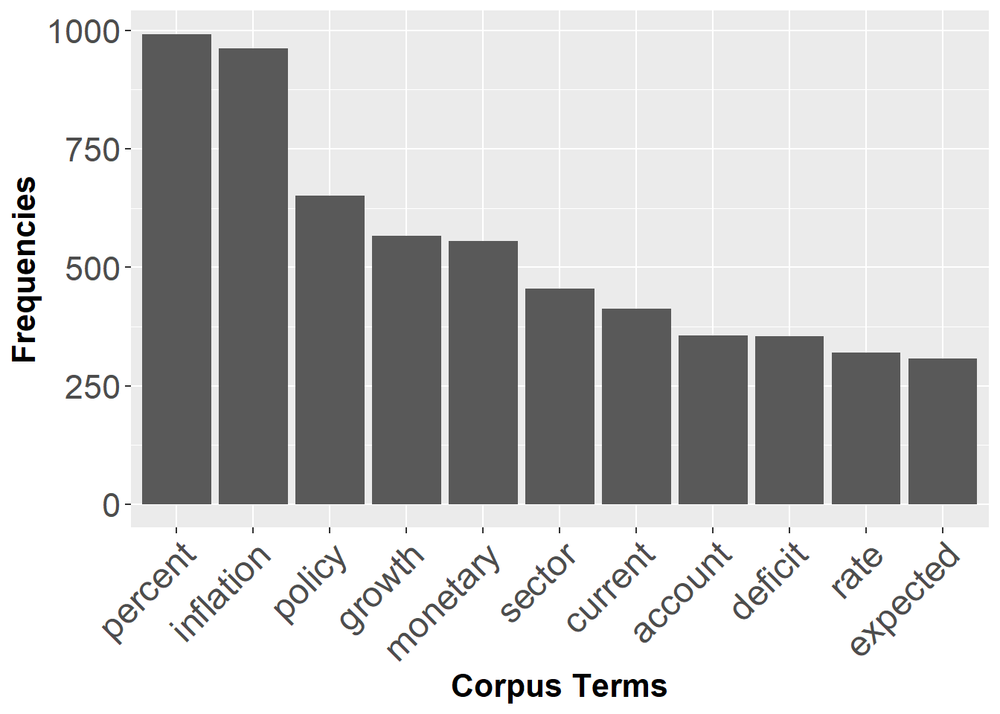
Dendrogram is another way to visualize the data. The dendrogram is a tree diagram frequently used to illustrate the arrangement of the clusters produced by hierarchical clustering. Hierarchical clustering is a method of cluster analysis which seeks to build a hierarchy of clusters without specifying the number of clusters beforehand. This is shown in Figure 3. The adjacency figure is another way to visualize the data. The adjacency figure shows the relationship between terms in the corpus. The adjacency figure is shown in ?@fig-adjacency.
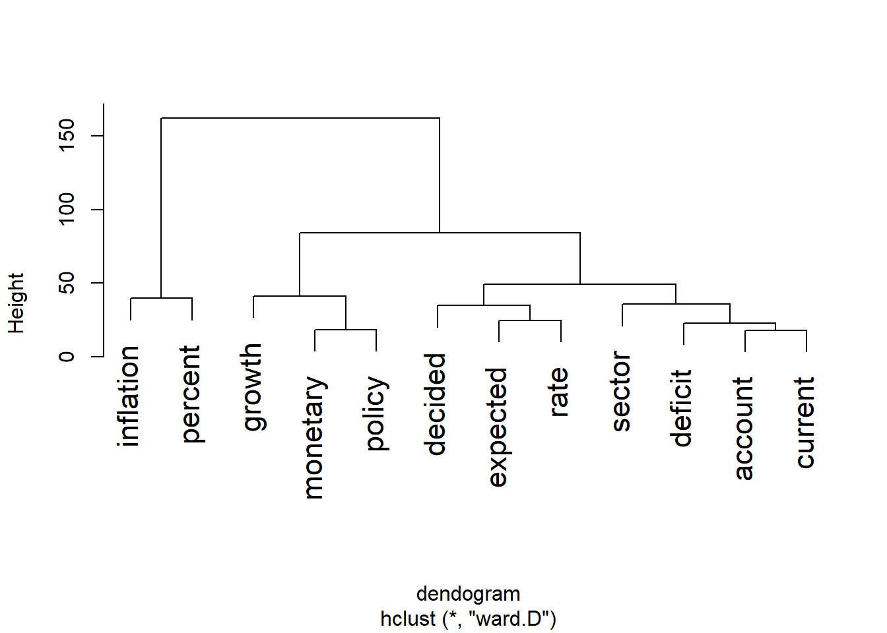
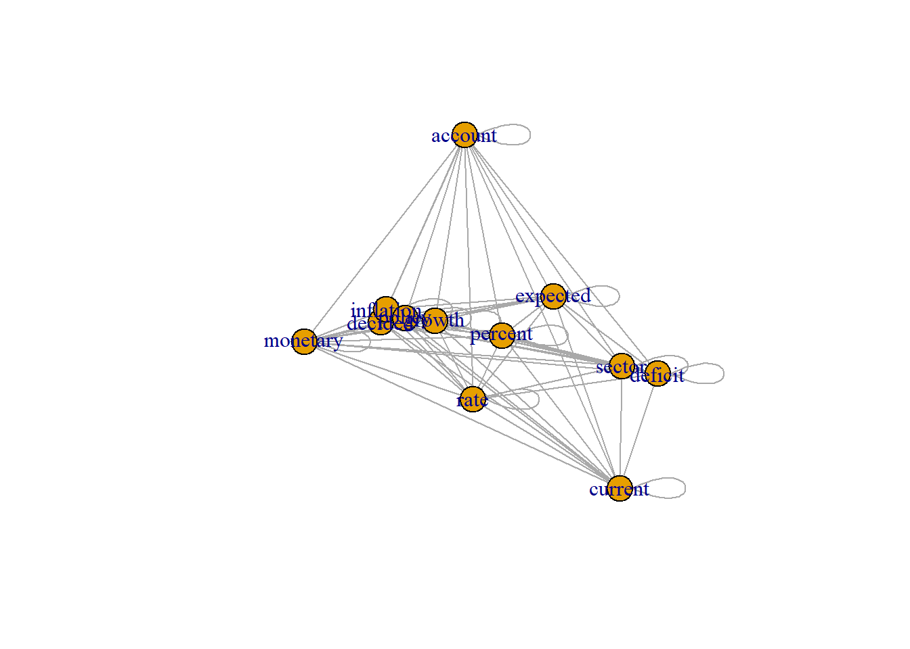
Correlation plot
One of the most intuitive way to visualize relationships between terms is to with correlation maps. Based on a certain ad-hoc criteria,Figure 5 show how some certain terms relate to each other.
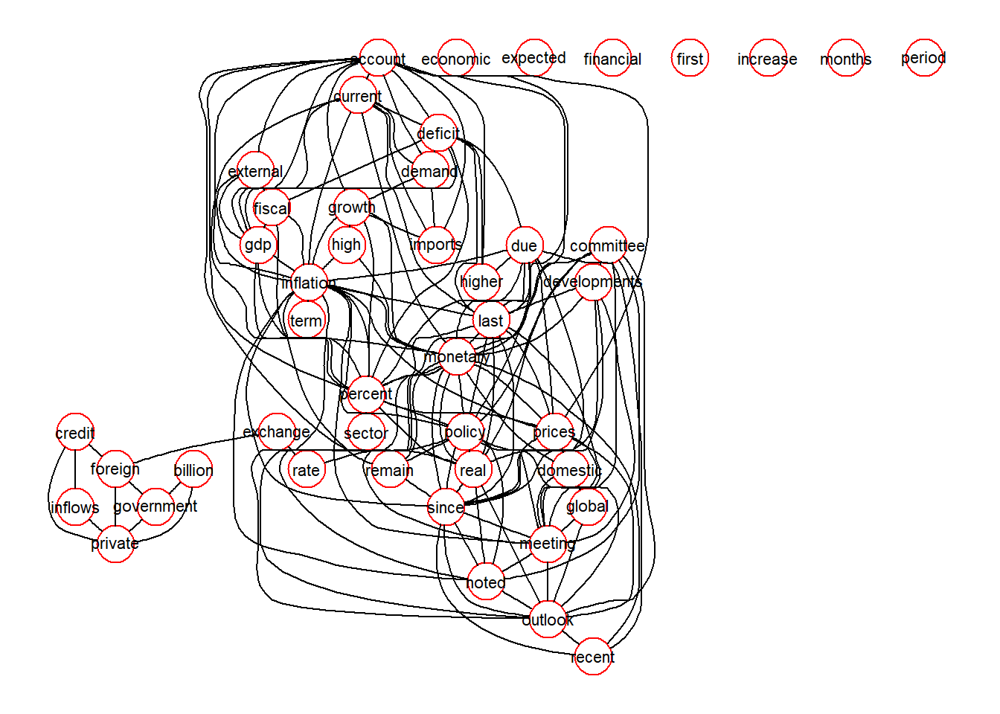
A dictionary-based approach was used to infer sentiment, employing the Loughran and McDonald financial sentiment dictionary. Special attention was given to context, as words like ‘increase’ or ‘decrease’ can have different sentiments depending on the economic indicator they describe. Relative frequencies of positive and negative words were calculated by dividing the frequency of these words by the total word count, providing normalized sentiment measures. Semantic analysis determined the overall sentiment orientation by calculating the ratio of positive to negative word frequencies for each document.
Topic modeling, specifically Latent Dirichlet Allocation (LDA), was utilized to uncover abstract topics within the documents. This method identified clusters of similar words, revealing hidden semantic structures and the balance of topics within each document. Heatmaps visualized term frequencies across documents, enabling side-by-side content comparison and highlighting shifts in focus over time, such as differences between 2018 and 2023. Advanced text analysis methods like Wordfish and Wordscores were applied for quantitative analysis of textual data. Wordfish estimated document positions on a latent dimension based on word frequencies, allowing visualization of changes in policy stance over time. Wordscores assigned scores to words based on reference texts, facilitating comparative analysis of policy positions.
Word Cloud
The wordcloud package is used to create the word cloud. There are three word clouds created in this analysis. Figure 6 cloud is created with a minimum frequency of 50. Figure 7 cloud is created with a minimum frequency of 100. Figure 8 cloud is created with a minimum frequency of 200.
[1] 86 36
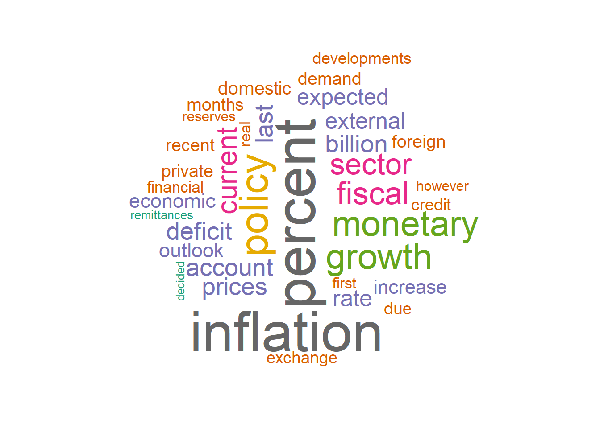
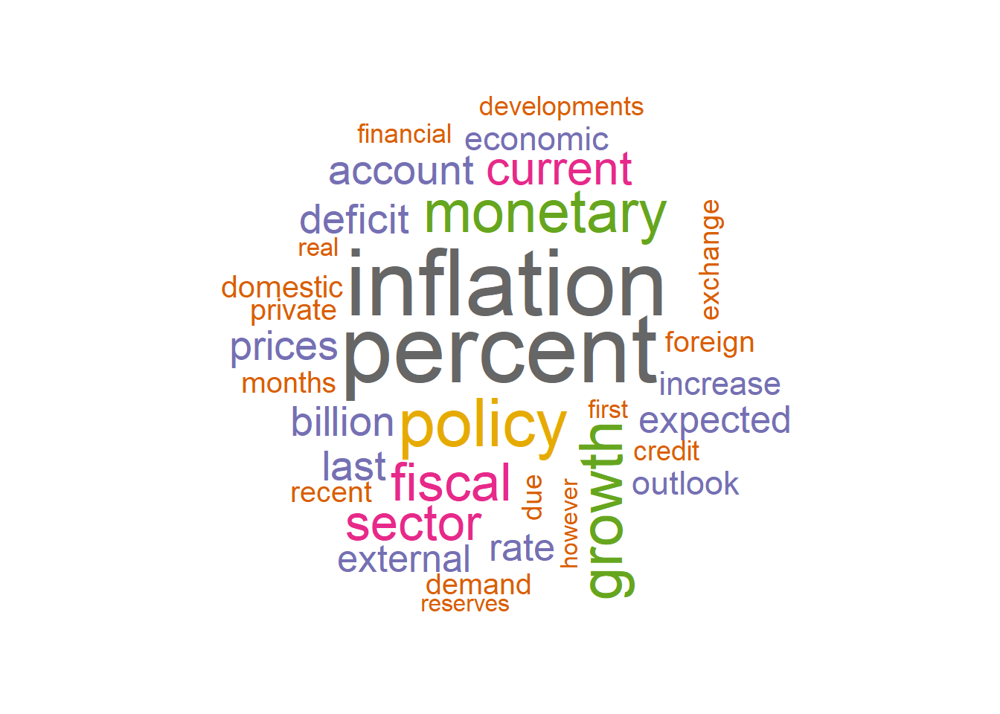
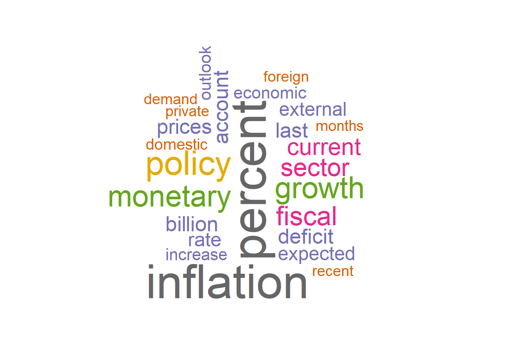
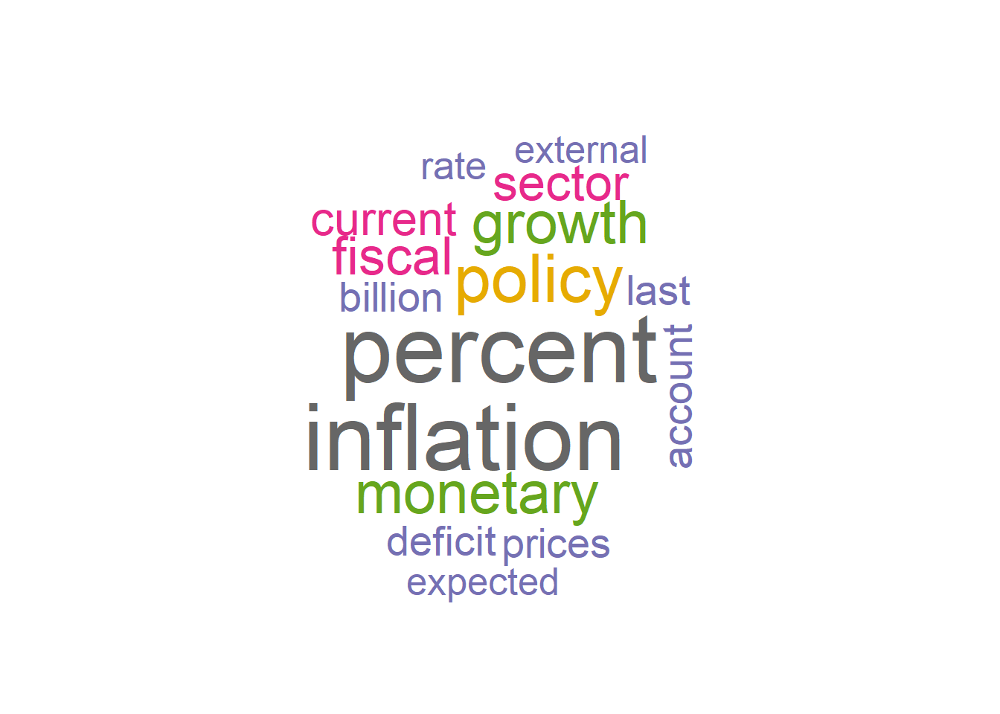
Weighting Scheme
Another weighting scheme - term frequency/inverse document frequency is given here to create word clouds. The term frequency/inverse document frequency is a statistical measure used to evaluate the importance of a word in a document relative to a collection of documents.
[1] 86 1199 jul noted borrowings committee coronavirus global
0.3031460 0.2892047 0.2809725 0.2532277 0.2497686 0.2189878
recovery meeting covid floods economy system
0.1991368 0.1981736 0.1930156 0.1876221 0.1858343 0.1854501
market half thus debt month liquidity
0.1783914 0.1764875 0.1749407 0.1726483 0.1724567 0.1703647
continued views
0.1697670 0.1657429 word freq
jul jul 0.3031460
noted noted 0.2892047
borrowings borrowings 0.2809725
committee committee 0.2532277
coronavirus coronavirus 0.2497686
global global 0.2189878Figure 10 is the bar graph created with the term frequency/inverse document frequency weighting scheme.
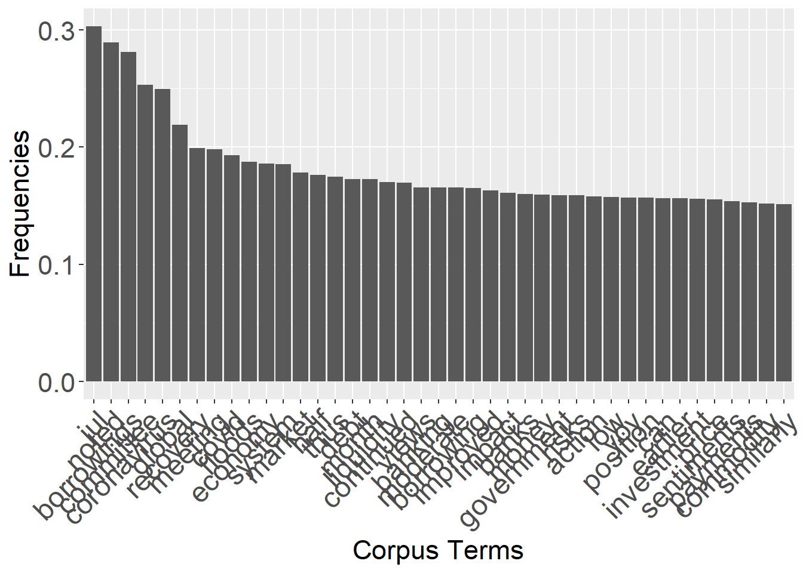
Figure 11 is the word cloud created with the term frequency/inverse document frequency weighting scheme. Figure 12 and Figure 13 are the word clouds created with the term frequency/inverse document frequency weighting scheme with different minimum frequencies.
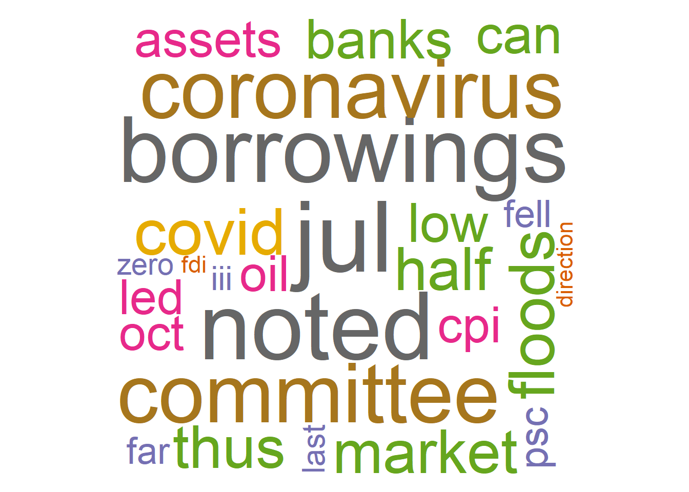
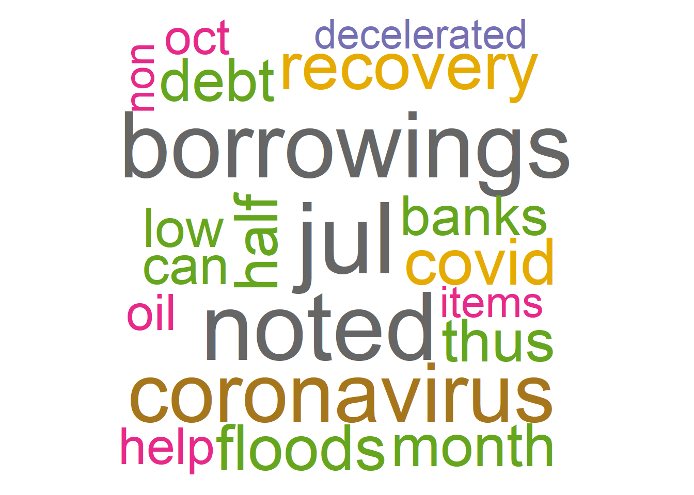
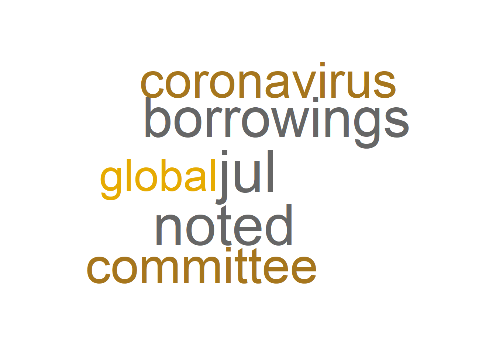
The purpose of creating a document-term matrix is twofold: first, to identify the main topics of each document by highlighting important and unique words; and second, to prepare the collection of documents for further analysis.
However, simply counting how often each word appears isn’t always helpful. Common words might show up frequently but don’t necessarily tell us much about the content. To overcome this, we use a method called term frequency-inverse document frequency (tf-idf).
Tf-idf is a technique that helps determine how important a word is within a single document compared to all other documents in a collection. It gives more weight to words that appear often in one document but not in many others. This way, it highlights words that are significant to a particular document and reduces the impact of common words that are less informative.
By using tf-idf, we can focus on the words that truly matter in each document. This makes it easier to summarize content, identify key topics, and improve how we retrieve and analyze information from the text.
Tidytext data table
Now I shall use tidytext with the help of unnest_tokens to convert one word per row. Table 1 shows the first 10 rows of the data table. And Figure 14 is the bar graph created with the term frequency/inverse document frequency weighting scheme.
word freq
jul jul 0.3031460
noted noted 0.2892047
borrowings borrowings 0.2809725
committee committee 0.2532277
coronavirus coronavirus 0.2497686
global global 0.2189878
recovery recovery 0.1991368
meeting meeting 0.1981736
covid covid 0.1930156
floods floods 0.1876221
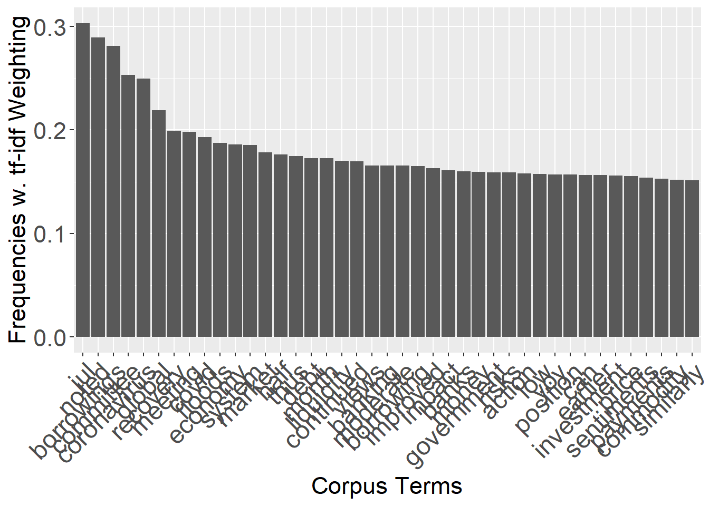
To reduce dimensionality, we use sparse term-document matrix as shown in Figure 15. The dendogram is created using the Euclidean distance and Ward’s method.
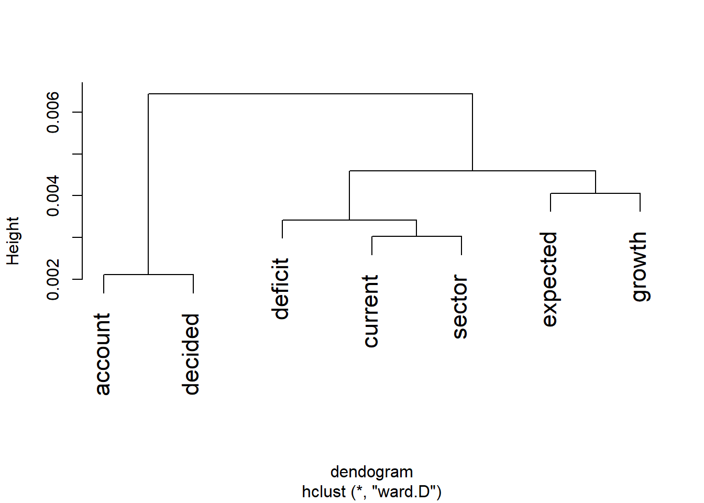
png
2 With conversion to dtm, exploratory data analysis is performed to identify patterns and trends in the text data.
Word counting
Dictionary-based text analysis is popular approach mainly because its easy to implement and interpret. The dictionary-based approach is based on the idea that the frequency of certain words in a text can be used to infer the sentiment of the text. However, sentiment words from one discipline to another might be different. For example, words used in psychology to express positive sentiments might be different from words used in economics. Therefore, it is important to use a dictionary that is specific to the discipline. The tidytext package is used to count the frequency of words in the text data. The get_sentiments function is used to get the sentiment words from the dictionary. In this document, I am using Loughran and McDonald dictionary to count the frequency of positive and negative words in the text data.
It is important to be careful in use of words to be positive or negative. For example, the word ‘increase’ is generally considered to be positive, but in the context of inflation, it is considered to be negative. Similarly the word ‘decrease’ is generally considered to be negative, but in the context of inflation, it is considered to be positive. Another example is tight and loose monetary policy. The word tight is generally considered to be positive, but in the context of monetary policy, it is considered to be negative. Similarly, the word loose is generally considered to be negative, but in the context of monetary policy, it is considered to be positive. Therefore, it is important to be careful in use of words to be positive or negative.
Next we use the match function that compares the terms in both dictionary and the text data. The match function returns the position of the first match. If there is no match, the match function returns NA. The match function is used to count the frequency of positive and negative words in the text data.
We then assign a value of 1 to the positive and negative matches. The ifelse function is used to assign a value of 1 to the positive and negative, and measure the overall sentiment for each document \(i\) by the following formula: \(Score_i = \frac{Positive_i - Negative_i}{Positive_i + Negative} \in [-1,1]\)
A document is considered to be positive if the score is greater than 0, and negative if the score is less than 0.
Relative frequency
The relative frequency of positive and negative words is calculated by dividing the frequency of positive and negative words by the total number of words in the text.
Semantic analysis
The semantic analysis is performed to identify the semantic orientation of the text data. The semantic orientation is the degree to which a word is positive or negative. The semantic orientation is calculated by dividing the frequency of positive words by the frequency of negative words. The semantic orientation is calculated for each document in the text data.
Topic models
Topic modeling is a statistical technique used to uncover the underlying “topics” within a collection of documents. It is a common text-mining tool that identifies hidden patterns or themes in a body of text. The basic idea is that if a document discusses a specific topic, certain words related to that topic will appear more frequently. For instance, words like “dog” and “bone” are likely to be more common in texts about dogs, while “cat” and “meow” will be prevalent in documents about cats. Common words like “the” and “is” would appear across all topics. Typically, a document might cover multiple topics in varying proportions. For example, a text that is 10% about cats and 90% about dogs would likely have a higher occurrence of dog-related words. Topic modeling identifies clusters of similar words, which represent these topics, and applies a mathematical approach to analyze the text. This helps to determine the dominant topics across the entire set of documents and the specific balance of topics within each document.
[,1]
01012018.txt 4
02032023.txt 1
04042023.txt 4
05102012.txt 3
07072022.txt 2
07082022.txt 1
08032022.txt 4
08062012.txt 4
08102011.txt 3
09042016.txt 3 Topic 1 Topic 2 Topic 3 Topic 4
[1,] "policy" "inflation" "sector" "percent"
[2,] "monetary" "monetary" "growth" "deficit"
[3,] "rate" "percent" "current" "account"
[4,] "expected" "growth" "percent" "growth"
[5,] "decided" "current" "policy" "policy"
[6,] "current" "policy" "account" "inflation"
[7,] "growth" "account" "decided" "current"
[8,] "inflation" "expected" "expected" "decided"
[9,] "account" "decided" "deficit" "expected"
[10,] "deficit" "deficit" "inflation" "monetary"
[11,] "percent" "rate" "monetary" "rate" The four topics identified seem to revolve around key economic themes, based on the recurring words within each:
Topic 1: Monetary Policy and Growth - Key words: “policy,” “monetary,” “rate,” “growth,” “inflation” - This topic appears to focus on monetary policy, growth rates, and inflation. Words like “policy,” “rate,” and “growth” suggest discussions around central bank decisions, economic growth strategies, and inflation control measures.
Topic 2: Inflation and Monetary Measures - Key words: “inflation,” “monetary,” “percent,” “growth,” “expected” - This topic seems to center around inflation metrics and monetary policy. Terms like “inflation,” “monetary,” and “percent” imply discussions on inflation trends, forecasts, and central bank responses to inflationary pressures.
Topic 3: Economic Growth and Balance of Payments - Key words: “sector,” “growth,” “current,” “account,” “deficit” - This topic appears to relate to economic growth and the balance of payments. The presence of “current,” “account,” and “deficit” indicates a focus on trade balances, external accounts, and their impact on sectors and overall growth.
Topic 4: Fiscal Policy and Inflation Dynamics - Key words: “percent,” “deficit,” “account,” “inflation,” “monetary” - This topic seems to address fiscal policy, deficits, and their influence on inflation. The mention of “deficit,” “account,” and “inflation” suggests a focus on fiscal balances, how they affect inflation, and monetary policy considerations.
Overall, the four topics capture a range of interconnected economic themes: monetary policy, inflation, growth, and fiscal balances. These themes reflect typical discussions in economic policy circles, highlighting the interplay between growth strategies, inflation control, and fiscal management.
Wordfish
Plotting Wordfish Score
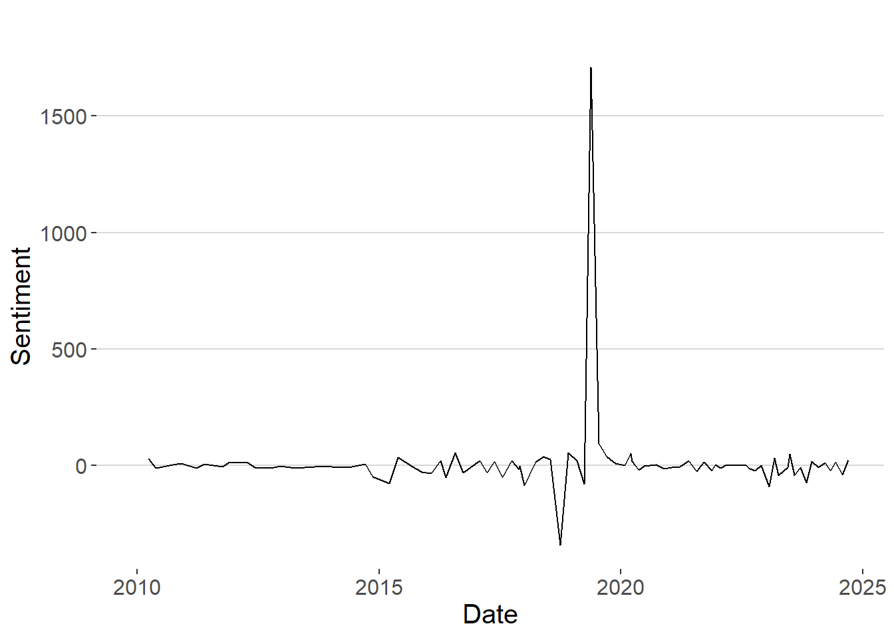
pdf
3 monetary policy committee statement pakistans economic
-0.31851327 -0.26847266 -0.70266638 0.01863794 0.01152245 -0.19212320
growth track achieve highest
0.01469201 0.01863794 0.01578806 0.01152245 Plotting Wordscores Score
?@fig-wordscores-plot1 and Figure 16 indicate the Wordscores score over time, the change in Wordscores score over time and the change in Wordscores score over time to indicate dovish/hawkish sentiment respectively.
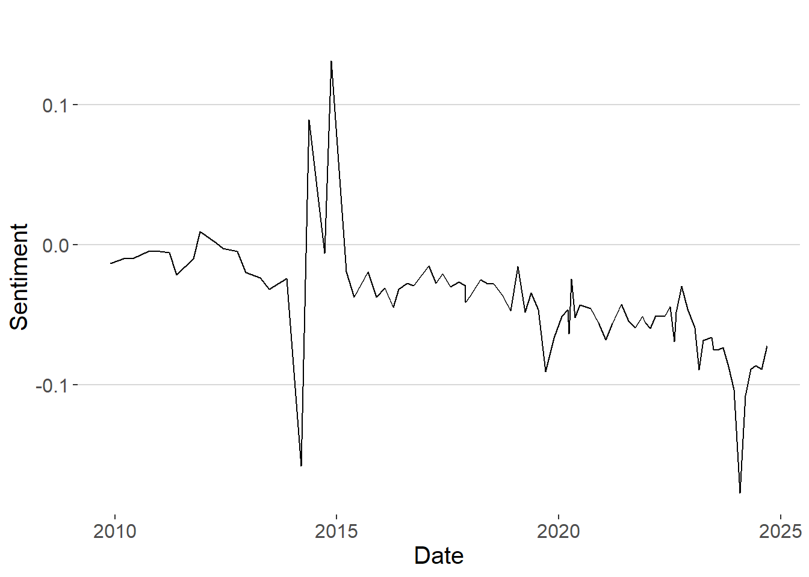
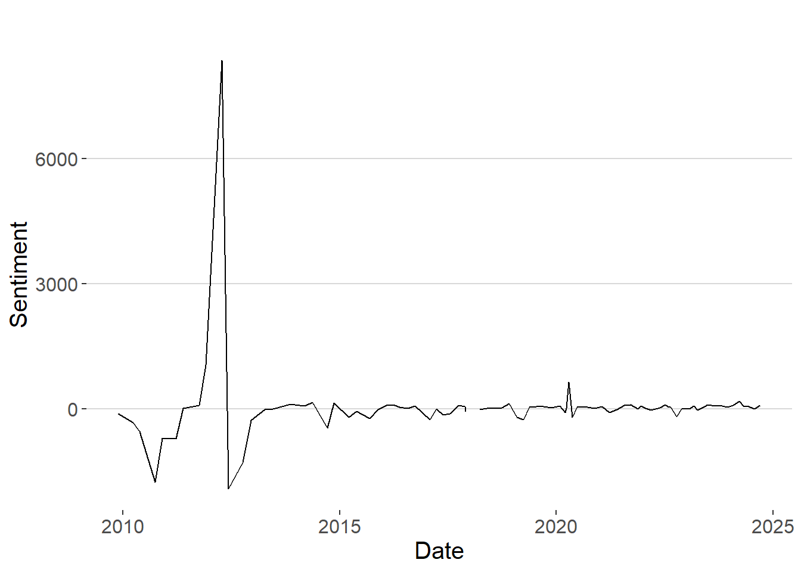
Conclusion
In conclusion, this study showed how text mining and sentiment analysis can turn unstructured data into a strategic asset. By analyzing monetary policy statements, the methods outlined offer a systematic approach to handling textual data, stressing the importance of context and careful interpretation. Initial findings indicate that the State Bank of Pakistan’s policy communications generally maintain a neutral tone, without strong bias towards hawkish or dovish sentiments. This work highlights the value of data-driven insights in economic research and provides a reproducible methodology for future studies. Advances in software have made text data analysis more accessible, encouraging its use among researchers and practitioners in both academic and business sectors. Effective use of data as a strategic asset can improve policy formulation, decision-making, and economic understanding. Future research could explore the relationship between sentiment analysis and financial market reactions, as well as the impact of sentiment on economic indicators. References
- Benchimol, J., et al. (2022). [Title of the guideline paper].
- Clark, M. (n.d.). Text Analysis in R. Retrieved from Text Analysis in R.
- Herasymova, O. (2022). [Title of the paper].
- Schwab, K. (2016). The Fourth Industrial Revolution. World Economic Forum.
- Shapiro, A. H., & Wilson, D. J. (2021). Taking the Fed at its word: Direct estimation of central bank objectives using text analytics. Federal Reserve Bank of San Francisco.